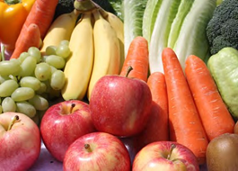
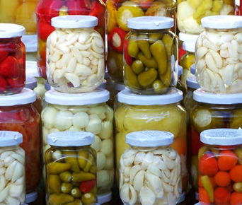

¿Cómo se transforman los alimentos?
Conocer cómo están compuestos los alimentos es una manera de empezar a pensar también en cómo cuidar nuestra salud y a qué debemos prestar atención al comprar y consumir productos alimenticios.
Algunos alimentos, como las verduras o las frutas frescas, no suelen ser preparados mediante transformaciones físicas o químicas. Otros alimentos requieren ser preparados o cocinados, es decir, debemos transformarlos para que sean más fáciles de digerir. Es el caso de algunos cereales como el arroz y el maíz, y de las legumbres, entre otros.
Muchas de estas transformaciones se realizan en casa, en el comedor de la escuela o en la cocina de un restaurante. Otras son realizadas en grandes cantidades en industrias alimentarias. Los alimentos que fueron elaborados en la industria se denominan alimentos procesados. Son productos alimentarios que han sufrido transformaciones y a los que, además, se les ha agregado sal o azúcar para mejorar su conservación. Por ejemplo, son alimentos procesados las legumbres y los pescados en lata.
Cuando el producto transformado tiene más de tres ingredientes y el agregado de azúcar, sodio y aditivos, se lo llama ultraprocesado. Son productos ultraprocesados las golosinas, las patitas de pollo y las bebidas gaseosas, entre otros.
1. Construí en tu carpeta un menú para un almuerzo que te parezca saludable.
a. Señalá qué alimentos están transformados y cuáles no.
b. Si conocés el modo de transformación de cada alimento, podés indicarlo también. Por ejemplo, los alimentos pueden sufrir transformaciones por mezcla, por batido, por cocción en agua hirviendo, por medio de vapor, por el calor del horno y por fritura, entre otros.

Composición química de los alimentos
Ahora nos detendremos a analizar la composición química de los alimentos. Probablemente hayas escuchado hablar de las grasas, los aceites, las proteínas y los hidratos de carbono. Quienes hacen dietas específicas por diversas cuestiones de salud conocen cuáles de estos componentes aportan más calorías y cuáles menos, cuáles son más convenientes y cuáles no. En las recetas escritas y en los programas de televisión también se menciona mucho este tema, ya que una alimentación equilibrada respecto de estos compuestos es fundamental para tener una vida saludable.
Se suele distinguir el acto de comer del proceso de alimentarse. La ingestión de comida es un proceso consciente y voluntario, y no todo lo que comemos es alimento que aporte beneficios a nuestro cuerpo. Los alimentos que nos proporcionan energía y nutrientes aportan los materiales necesarios para llevar a cabo las funciones vitales, mantener una buena salud y realizar las actividades cotidianas. Los alimentos se pueden clasificar según distintos criterios, entre otros, por su origen, por su composición y componente predominante, y por la principal función nutritiva que desempeñan. Pueden estar formados en su mayor parte por compuestos químicos que derivan principalmente de seres vivos, como plantas y animales.
Los nutrientes que podemos encontrar en los alimentos son el agua, los hidratos de carbono, las proteínas, los lípidos (grasas y aceites), las vitaminas y los minerales. La composición general de los alimentos y la forma en que sus componentes se organizan, les otorgan sus características particulares.
Descomposición de los alimentos
Los alimentos frescos pueden descomponerse o pudrirse muy rápidamente. Los productos envasados, en cambio, suelen durar más tiempo, aunque todos tienen fecha de vencimiento. El principal factor que causa la alteración o descomposición de los alimentos es la acción de microorganismos que encuentran las condiciones adecuadas para vivir y desarrollarse en ellos, por ejemplo, las bacterias que se encuentran normalmente en el ambiente o las esporas (gérmenes) de hongos como el moho. Generalmente, la humedad y las altas temperaturas contribuyen al desarrollo de estos microorganismos.
Conservación de los alimentos
La conservación eficaz y duradera de los alimentos se logra eliminando o disminuyendo (inhibiendo) todos los factores de relevancia involucrados en la alteración de los alimentos.
1.- Analizá al menos tres alimentos envasados que tengas en tu casa o estén en la góndola de algún negocio. También podés buscar la información en internet. Anotá en tu carpeta la información que obtuviste y todo aquello que no conozcas, particularmente la mención a compuestos químicos, para luego buscar su función.
a.- Buscá información sobre los distintos métodos de conservación de los alimentos.
b.- Buscá en la etiqueta de los alimentos envasados elegidos el método de conservación utilizado en cada uno.
c.- ¿Qué ventajas y desventajas tiene el hecho de estar envasados?
d.- ¿Qué hay que observar al comprar o consumir estos productos?
